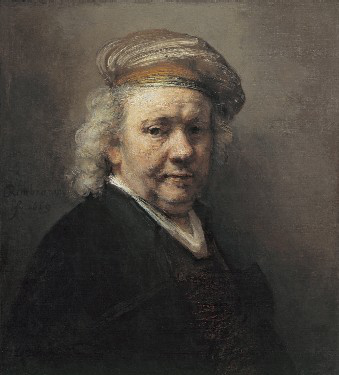
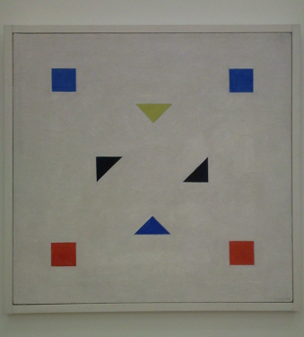

2014
What is visual abstraction? What is visual representation?


The work reproduced above left is an example of visual representation.
It is the final self-portrait by Rembrandt van Rijn, painted in 1669.
Visually represented, he still seems to look at us.
The second work, reproduced above right, is an example of visual abstraction. This work, titled "Composition", was painted by Bart van der Leck between 1918 and 1920. Here, the shapes that can be seen do not seem to represent anything other than themselves, as they are present on the canvas.
The two paintings can also be contrasted in other ways. For example, the formalism, just mentioned, of the second painting initially did not seem to induce any strong emotions in me, when I first saw the work at the Stedelijk Museum. The self-portrait, on the other hand, abruptly surprised me when first seeing it at the Mauritshuis, in an intense moment of simulated eye contact.
After this moment, looking at the self-portrait more, the represented lighting, facial orientation, and surroundings all seemed to steer my viewing to Rembrandt's right eye. The rough brushstrokes used for the areas around and away from the eye, on the other hand, seemed to give little support for other ways of looking at the painting. Appreciating this apparent visual center, with its low-resolution periphery, made it seem to me that the painting, indeed, specifically had been made to induce the intense, single-gaze moment I had experienced.
In contrast to this, a few years later, standing in front of Composition for the first time initially did not produce an intense moment, at all. But then, after a few seconds, this changed: I found myself looking at each of the component figures in rapid succession, and suddenly, the painting became very interesting and exciting to me.
I could now combinatorially assemble ever-new experiences from the component moments of gazing at single specific shapes. Also, I could repeatedly experience each separate shape anew, but differently, partly depending on my preceding experience of the other shapes. And I found that I myself could control this process, of discovery, in real time.
I afterwards appreciated how my experience had been supported by the painting, as it displayed only a few, disconnected figures, widely spaced on an even ground. This gave both multiple clearly distinct centers for gazing, and ease for eye movements rapidly alternating between them.
Soon after, this triggered the idea to create a specific set of possible experiences. These would be grounded, firstly, in the way of looking and experiencing described two paragraphs ago. They also should counter a false contradiction between formalism and emotion. And finally, they should make it possible to directly experience visual representation, visual abstraction, and the difference between the two.
Like a painting, this could be done using a 2D still image. The ground, shapes, and colors used would follow the work of Bart van der Leck. The greyscale background, however, would have a darker shade, making prolonged viewing less tiring. Also, the three non-greyscale colors would be made similar in lightness to the grey background.
As a result, the overall image initially might appear as one evenly grey area. This could then, from the outset, stimulate eye movements that would search, find, and move between shapes. As these shapes would become perceivable, they also would become recognizable as combining into faces. These faces would express different mental states.
Thereby, each facial shape should be able to induce some emotional response in the viewer. The viewer could then consciously examine and indefinitely recombine these separate impressions, and find out more about them.
To support the indefinite and self-directed recombination, strongly suggested endpoints for eye movement trajectories should be avoided. This might be possible if using a considered relative placement of the facial shapes. Also, the impression of the shapes having rigidly fixed locations might be reduced, again using their lightness.
The spacing used in the relative placement should be wide, on the other hand, so that resting the gaze on any single facial shape would not be hard, either. Then, the viewer could try to start seeing a group of separate shapes, rather than a face, and explore how surprisingly and fundamentally hard it can be to have three colored triangles (or rectangles) not appear as a face.
Again, this process could be supported by the similar lightness of figure and ground, as, on looking longer, retinal adaptation would make one, two, or all three of the component shapes temporarily disappear.
This would safeguard the possibility of making
conscious transitions –
while looking at the same shapes –
between experiencing visual representation,
and experiencing visual abstraction.